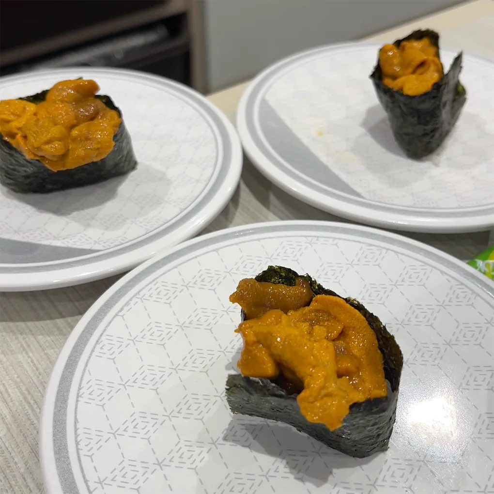
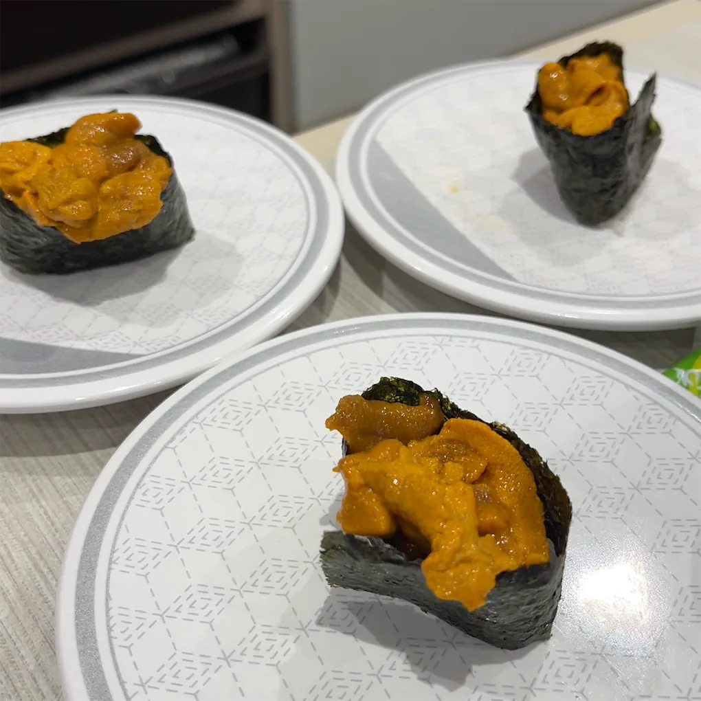
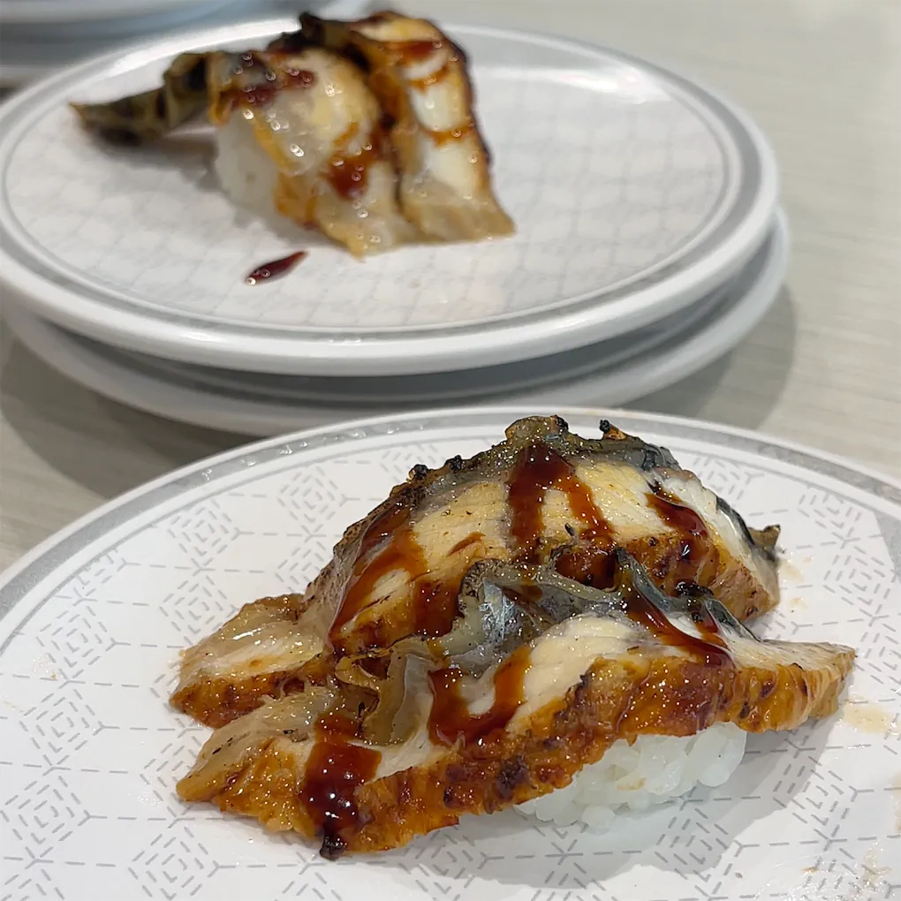
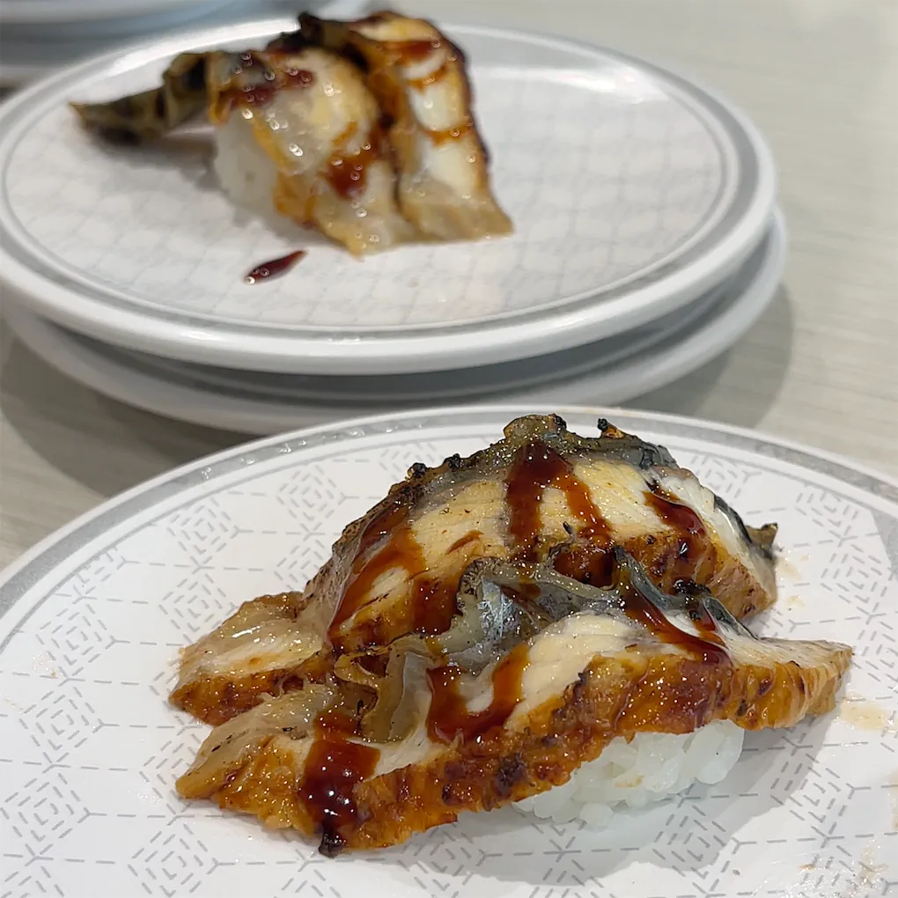

Blog post

🍕 Pizza
The pizza felt like the perfect comfort food — warm, colorful, and full of character. I loved how each half had its own personality: one side bright and fresh with tomatoes, olives, and melting cheese, and the other more delicate with its light toppings and subtle flavor. Sharing it made the meal even better; it set such a cozy and cheerful tone for the day. It wasn’t just food — it was the first small moment that made us smile and settle into the rhythm of the afternoon.
🍝 the Seafood Pasta
The seafood pasta was the kind of dish that instantly warms you up the moment it arrives. The rich tomato sauce, mixed with shrimp, clams, and mussels, had a comforting aroma that made the long wait completely worth it. The flavors were bold yet balanced — a little sweet, a little salty, and full of freshness from the sea. Eating it felt like a pause from everything else, a moment where time slowed down and all that mattered was good food and good company.
YUMMY
 


 
